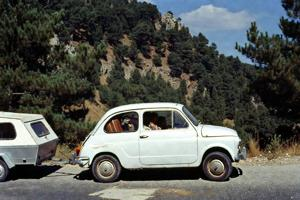
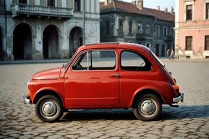
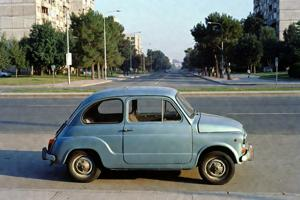
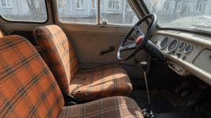
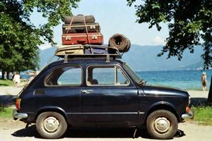

Драва (автомобиль)
/Drava78_1.jpg){kind=link}

Драва — линейка микроавтомобилей, выпускавшихся в Народной Республике Верхняя Паннония (НРВП) с 1967 по 1990 год на Гоубкаславском автомобильном заводе (Gowbkaslavska Samojezdova Djeljnja, ГСД). Всего было выпущено около 312 тысяч машин четырёх моделей. «Драва» была единственным автомобилем собственного производства в НРВП и для большинства граждан — единственной машиной в их жизни. Вероятно, это единственный в истории автомобиль, вошедший в государственную конституцию под собственным названием: статья 47 Конституции НРВП 1979 года гарантировала каждому гражданину право получить один автомобиль бесплатно.
Предыстория и разработка
Инициатором выступил генералиссимус Северин Гоубка. К концу 1950-х годов несколько социалистических стран наладили выпуск собственных автомобилей — в частности, Югославия выпустила «Заставу 750» на базе Fiat 600, а Восточная Германия — «Трабант». Гоубка хотел, чтобы свой автомобиль был и у НРВП. Отечественный автомобиль мог бы продемонстрировать технологические возможности страны, обеспечить рабочий класс доступным личным транспортом и сократить зависимость от импорта за твёрдую валюту.
Разработка началась около 1958 года совместными усилиями Верхней Паннонии и Югославии. Инженеры «Заставы» привнесли опыт, наработанный при создании «Заставы 750». Прототип P-1 (Prjeva zroba, «Первое изделие») был собран во Вроновицком институте прикладной инженерии и показан на Гоубкаславской промышленной выставке 1963 года. Для испытаний изготовили около тридцати таких машин. Обнаружились несколько серьёзных дефектов, прежде всего — склонность загораться при подъёме в гору: следствие самотёчной подачи топлива. Изделие пришлось дорабатывать ещё несколько лет.
Охлаждение паннонско-югославских отношений положило конец совместной работе. Гоубка, заподозривший югославов во «вредительском затягивании сроков», распорядился вести проект силами исключительно отечественных инженеров. Гоубкаславский автомобильный завод был достроен в 1966 году, в основном силами строительных батальонов Народной армии. 1 мая 1967 года, в День международной солидарности трудящихся, с конвейера сошла первая серийная «Драва» — названная в честь Южной Дравы, главной реки Верхней Паннонии. Торжественная церемония транслировалась по государственному радио и телевидению. Гоубка сел за руль, чтобы демонстративно объехать заводской двор. Запуск двигателя по телевидению не показали.
Модели и технические характеристики
Драва 67 (1967–1970)
/Drava67_5.jpg){kind=link}

Первая серийная модель сохранила базовую компоновку P-1. Кузов был собран из фанерных панелей на деревянном каркасе, и покрыт лаком поверх смоляного герметика. Двухцилиндровый двухтактный двигатель объёмом 487 куб. см с воздушным охлаждением развивал около 17 л. с. при 4200 об/мин; привод шёл на задние колёса через четырёхступенчатую механическую коробку передач. Максимальная скорость была заявлена 90 км/ч; реально при хороших условиях достигалось около 83–85 км/ч. Топливный насос отсутствовал: бензин поступал в карбюратор самотёком из бака, расположенного сверху и позади двигателя. Конструкция получалась механически простой, но при лобовых столкновениях возникала серьёзная угроза пожара. Снаряжённая масса составляла около 340 кг.
Двухтактный двигатель требовал масла, смешанного с топливом; это порождало сизый выхлопной шлейф, видимый издалека, а пробки окутывали улицы маслянистой дымкой. По данным секретной проверки, проведённой Министерством автомобильного транспорта в 1968 году, уровень шума в салоне на шоссейной скорости достигал 94 децибел — примерно как у работающей бензопилы; в отчёте этот показатель назван «соответствующим допустимым параметрам для пролетарского транспорта». Вибрация на крейсерской скорости заставляла фанерные панели кузова искривляться и резонировать. На скорости около 70 км/ч возникала резонансная частота, от которой заднее сиденье тряслось так, что, по словам владельцев, сидеть на нём было тяжелее, чем вести машину. Периодическая подтяжка расшатавшихся винтов и элементов отделки считалась штатным обслуживанием.
Двухдверный кузов вмещал четырёх человек, но взрослые люди помещались на заднем сиденье лишь при высокой взаимной терпимости, а объём багажника был весьма скромен. В дополнение завод выпускал тентованные двухколёсные прицепы — грузовые и пассажирские. Багажника не хватало ни для какой семейной поездки, и прицеп быстро стал почти неотъемлемым аксессуаром: к 1972 году опросы показали, что более 70% владельцев «Дравы» регулярно ездили с прицепом.
«Драва 67» выпускалась в трёх официальных цветах, утверждённых министерским постановлением — «дравский голубой», «революционный красный» и «народный белый». По заводским документам, рассекреченным после 1990 года, около 60% машин первых двух лет выпуска требовали существенной доработки перед отгрузкой.
Драва 71 (1971–1978)
/Drava71_2.jpg){kind=link}

«Драва 71» сменила фанерный кузов на панели из дюропласта — фенолформальдегидного смолистого композита, армированного хлопковым волокном, — и деревянную раму на стальную. Это улучшило водостойкость и конструктивную прочность. Поверхность из дюропласта не поддавалась перекраске, поэтому выцветание и царапины сохранялись навсегда. Цветовая гамма расширилась до пяти оттенков.
Новый кузов хуже поглощал вибрацию двигателя, чем деревянные панели, создавая высокочастотную дрожь рулевой колонки и приборной панели на крейсерской скорости. Уровень шума в салоне не снизился, а по некоторым свидетельствам, стал несколько выше. Выхлоп двухтактного двигателя не улучшился: за каждой «Дравой» при разгоне тянулся характерный синеватый шлейф, а колонна таких машин в городских пробках напоминала движущийся окуриватель.
В 1972 году рабочие ГСД пожаловались руководству завода, что пары дюропласта в производственном цехе вызывают «головокружение, тошноту и стойкий запах горелой резины». Жалобу приняли к сведению, положили в архиве и оставили без последствий.
Мощность двигателя незначительно выросла до 18 л. с. благодаря улучшенной настройке карбюратора. В стандартное оснащение добавили поворотники. На «Драве 67» они были опциональными и на практике почти не устанавливались — это считалось одной из причин плохой аварийной статистики старой модели.
Драва 78 (1978–1984)
/Drava78_interior.jpg){kind=link}

Новый дизайн решётки радиатора и фар придал «Драве 78» несколько более современный облик. Электростартер пришёл на смену ручному кривошипному пуску прежних моделей. В стандартное оснащение вошло обогреваемое заднее стекло — именно оно породило классический паннонский автомобильный анекдот: «Зачем "Драве" обогрев заднего стекла? Чтобы не мёрзли руки, пока толкаешь». Задний багажник переработали: крышка стала шире, объём слегка вырос; в рекламных материалах ГСД говорилось, что теперь в багажник поместятся «запасное колесо, набор инструментов и корзинка для скромного пикника».
Драва 85 (1984–1990)
/Drava85_1.jpg){kind=link}

Последняя модель прошла наиболее серьёзную механическую переработку за всю историю «Дравы». Новый двигатель объёмом 520 куб. см развивал 19 л. с., несколько улучшив динамику и снизив перегрев на горных маршрутах. Шасси усилили в ответ на постоянные жалобы, что машину сносит боковым ветром — который при снаряжённой массе около 360 кг представлял реальную опасность. Приборную панель изготовили из формованного пластика вместо крашеной фанеры. В перечень дополнительного оборудования впервые вошли штатная АМ-радиостанция, тонированные стёкла и багажник на крышу. Увеличенный двигатель несколько уменьшил дымность выхлопа на шоссейной скорости, однако породил новую низкочастотную вибрацию около 3200 об/мин, от которой показания приборов на панели становились расплывчатыми.
Конституционный статус и право пяти лет
По норме статьи 47 Конституции НРВП 1979 года, каждый гражданин, непрерывно проработавший пять лет либо сверхсрочно прослуживший в армии не менее двух лет, имел право получить новую «Драву» бесплатно. Так НРВП стала, по всей видимости, единственным в истории государством, вписавшим в свой основной закон серийный автомобиль конкретной марки.
На практике это право существенно ограничивалось очередями. ГСД выпускал около 13 500 машин в год; спрос неизменно превышал предложение, а время ожидания варьировалось от трёх до семи лет в зависимости от места жительства и политических связей. Приоритет имели работники ГСД, функционеры аппарата КПВП, офицеры армии и НОН. Ближайшее окружение Гоубки ездило на советских «Волгах», что государственные СМИ тщательно замалчивали.
Роль в культуре
«Драва» стала неотъемлемой частью паннонской массовой культуры эпохи НРВП. Стандартная картина паннонского семейного отдыха — бесконечно тиражировавшаяся в государственных СМИ — изображала «Драву» революционного красного или дравского синего цвета с загруженным верхним багажником, тянущую неизменный двухколёсный прицеп к какому-нибудь озёрному курорту. Выражение «Драва без прицепа» (Drava bez prilada) стало нарицательным для чего-нибудь неполного и ущербного.
Многочисленные недостатки автомобиля породили богатый пласт народного юмора. Самый известный анекдот: «Как вдвое поднять стоимость "Дравы"? Залить полный бак». Пародийный рекламный слоган: «Драва. Всё-таки машина». Любовь к машине уживалась с трезвым пониманием её недостатков. Очередь стала социальным институтом: семьи планировались с расчётом на ожидаемую дату получения, и многие бывшие граждане Бывшей Верхней Паннонии вспоминают получение собственной «Дравы» как важную жизненную веху — не менее волнующую, чем свадьба или рождение ребёнка.
Экспорт
С 1974 года «Драву» поставляли в Танзанию, африканскую социалистическую страну, по двустороннему соглашению о торговле и техническом сотрудничестве. За восемь лет было отгружено около 1200 машин. Танзанийские механики, прошедшие подготовку по обслуживанию «Дравы», ценились за умение импровизировать ремонт в условиях дефицита ресурсов — навык, вполне отвечавший инженерной философии этого автомобиля. Экспортную программу свернули в 1982 году из-за дипломатического инцидента, не имевшего отношения к автомобилю.
Закат и наследие
После падения коммунистического правительства в конце 1989 года ГСД лишился государственных субсидий и в феврале 1990 года объявил о банкротстве. Последняя выпущенная «Драва» — «Драва 85», серийный номер 312 440 — была передана в Национальный музей Вроновицы, где по сей день экспонируется вместе с инструментами, которыми её собирали.
После 1990 года обладание «Дравой» стало признаком ностальгии и особой паннонской самоиронии. Возник коллекционный рынок — прежде всего в диаспоре: к началу 2010-х годов хорошо сохранившиеся экземпляры уходили по ценам нового западноевропейского автомобиля среднего класса.
Ежегодная любительская гонка Drava Drive во Вроновице, впервые организованная в 2003 году группой автомобильных энтузиастов из Нейтральной зоны, выросла в крупнейшее регулярное публичное мероприятие разделённого города. В 2019 году — в последний раз перед повторным введением ограничений на межзональный доступ — по трассе, проложенной через старый квартал, проехало около 170 драварей. Мероприятие собирает участников из паннонской диаспоры всей Европы и Северной Америки, и периодически предлагается в качестве площадки для межзонального культурного обмена.
Категории: Культура, Повседневная жизнь, Социалистическая эпоха